摘要
目前最先进的目标检测网络需要先用区域建议算法推测目标位置，像SPPnet[7]和Fast R-CNN[5]这些网络已经减少了检测网络的运行时间，这时计算区域建议就成了瓶颈问题。本文中，我们介绍一种区域建议网络（Region Proposal Network, RPN），它和检测网络共享全图的卷积特征，使得区域建议几乎不花时间。RPN是一个全卷积网络，在每个位置同时预测目标边界和objectness得分。RPN是端到端训练的，生成高质量区域建议框，用于Fast R-CNN来检测。通过一种简单的交替运行优化方法，RPN和Fast R-CNN可以在训练时共享卷积特征。对于非常深的VGG-16模型[19]，我们的检测系统在GPU上的帧率为5fps（包含所有步骤），在PASCAL VOC 2007和PASCAL VOC 2012上实现了最高的目标检测准确率（2007是73.2%mAP，2012是70.4%mAP），每个图像用了300个建议框。代码已公开。
引言
最近在目标检测中取得的进步都是由区域建议方法（例如[22]）和基于区域的卷积神经网络（R-CNN）[6]取得的成功来推动的。基于区域的CNN在[6]中刚提出时在计算上消耗很大，幸好后来这个消耗通过建议框之间共享卷积[7,5]大大降低了。最近的Fast R-CNN[5]用非常深的网络[19]实现了近实时检测的速率，注意它忽略了生成区域建议框的时间。现在，建议框是最先进的检测系统中的计算瓶颈。
区域建议方法典型地依赖于消耗小的特征和经济的获取方案。选择性搜索（Selective Search, SS）[22]是最流行的方法之一，它基于设计好的低级特征贪心地融合超级像素。与高效检测网络[5]相比，SS要慢一个数量级，CPU应用中大约每个图像2s。EdgeBoxes[24]在建议框质量和速度之间做出了目前最好的权衡，大约每个图像0.2s。但无论如何，区域建议步骤花费了和检测网络差不多的时间。
Fast R-CNN利用了GPU，而区域建议方法是在CPU上实现的，这个运行时间的比较是不公平的。一种明显提速生成建议框的方法是在GPU上实现它，这是一种工程上很有效的解决方案，但这个方法忽略了其后的检测网络，因而也错失了共享计算的重要机会。
本文中，我们改变了算法——用深度网络计算建议框——这是一种简洁有效的解决方案，建议框计算几乎不会给检测网络的计算带来消耗。为了这个目的，我们介绍新颖的区域建议网络（Region Proposal Networks, RPN），它与最先进的目标检测网络[7,5]共享卷积层。在测试时，通过共享卷积，计算建议框的边际成本是很小的（例如每个图像10ms）。
我们观察发现，基于区域的检测器例如Fast R-CNN使用的卷积（conv）特征映射，同样可以用于生成区域建议。我们紧接着这些卷积特征增加两个额外的卷积层，构造RPN：第一个层把每个卷积映射位置编码为一个短的（例如256-d）特征向量，第二个层在每个卷积映射位置，输出这个位置上多种尺度和长宽比的k个区域建议的objectness得分和回归边界（k=9是典型值）。
我们的RPN是一种全卷积网络（fully-convolutional network, FRN）[14]，可以针对生成检测建议框的任务端到端地训练。为了统一RPN和Fast R-CNN[5]目标检测网络，我们提出一种简单的训练方案，即保持建议框固定，微调区域建议和微调目标检测之间交替进行。这个方案收敛很快，最后形成可让两个任务共享卷积特征的标准网络。
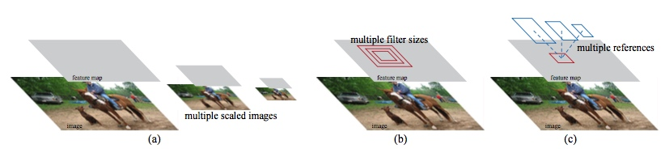
Figure 1: Different schemes for addressing multiple scales and sizes. (a) Pyramids of images and feature maps are built, and the classifier is run at all scales. (b) Pyramids of filters with multiple scales/sizes are run on the feature map. (c) We use pyramids of reference boxes in the regression functions.
我们在PASCAL VOC检测标准集[4]上评估我们的方法， fast R-CNN结合RPN的检测准确率超过了作为强大基准的fast R-CNN结合SS的方法。同时，我们的方法没有了SS测试时的计算负担，对于生成建议框的有效运行时间只有10毫秒。利用[19]中网络非常深的深度模型，我们的检测方法在GPU上依然有5fps的帧率（包括所有步骤），因此就速度和准确率（PASCAL VOC 2007上是73.2%mAP，PASCAL VOC 2012上是70.4%）而言，这是一个实用的目标检测系统。代码已公开。
相关工作
最近几篇文章中提出了用深度网络定位类确定或类不确定的包围盒[21, 18, 3, 20] 的方法。在OverFeat方法[18]中，训练全连接（fc）层，对假定只有一个目标的定位任务预测包围盒坐标。fc层再转入卷积层来检测多个类确定的目标。MultiBox方法[3, 20]从最后一个fc层同时预测多个（如800）包围盒的网络中生成区域建议，R-CNN[6]就是用的这个。他们的建议框网络应用于单个图像或多个大图像的切割部分（如224x224）[20]。我们在后文中讲我们的方法时会更深层次地讨论OverFeat和MultiBox。
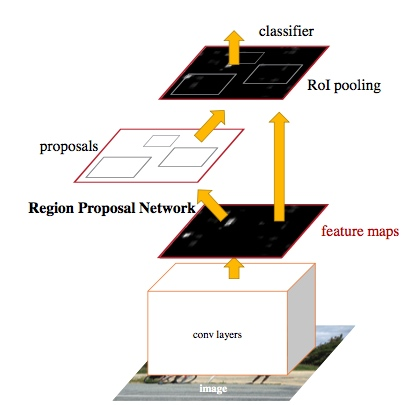
Figure 2: Faster R-CNN is a single, unified network for object detection. The RPN module serves as the ‘attention’ of this unified network.
卷积的共享计算[18, 7, 2, 5]高效、精确，已经在视觉识别方面吸引了越来越多的注意。OverFeat论文[18]从图像金字塔计算卷积特征，用于分类、定位、检测。在共享的卷积特征映射上自适应大小的pooling（SPP）[7]能有效用于基于区域的目标检测[7, 16]和语义分割[2]。Fast R-CNN[5]实现了在共享卷积特征上训练的端到端检测器，显示出令人惊叹的准确率和速度。
区域建议网络
区域建议网络（RPN）将一个图像（任意大小）作为输入，输出矩形目标建议框的集合，每个框有一个objectness得分。我们用全卷积网络[14]对这个过程构建模型，本章会详细描述。因为我们的最终目标是和Fast R-CNN目标检测网络[15]共享计算，所以假设这两个网络共享一系列卷积层。在实验中，我们详细研究Zeiler和Fergus的模型[23]（ZF），它有5个可共享的卷积层，以及Simonyan和Zisserman的模型[19]（VGG），它有13个可共享的卷积层。
为了生成区域建议框，我们在最后一个共享的卷积层输出的卷积特征映射上滑动小网络，这个网络全连接到输入卷积特征映射的\(n \times n\)的空间窗口上。每个滑动窗口映射到一个低维向量上（对于ZF是256-d，对于VGG是512-d，每个特征映射的一个滑动窗口对应一个数值）。这个向量输出给两个同级的全连接的层——包围盒回归层（reg）和包围盒分类层（cls）。本文中n=3，注意图像的有效感受野很大（ZF是171像素，VGG是228像素）。图1（左）以这个小网络在某个位置的情况举了个例子。注意，由于小网络是滑动窗口的形式，所以全连接的层（\(n \times n\)的）被所有空间位置共享（指所有位置用来计算内积的\(n \times n\)的层参数相同）。这种结构实现为\(m \times n\)的卷积层，后接两个同级的\(1 \times 1\)的卷积层（分别对应reg和cls），ReLU[15]应用于\(n \times n\)卷积层的输出。
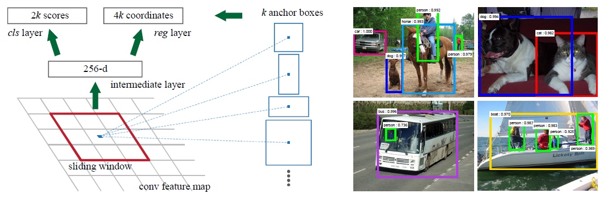
图1：左：区域建议网络（RPN）。右：用RPN建议框在PASCAL VOC 2007测试集上的检测实例。我们的方法可以在很大范围的尺度和长宽比中检测目标。
平移不变的anchor
在每一个滑动窗口的位置，我们同时预测k个区域建议，所以reg层有4k个输出，即k个box的坐标编码。cls层输出2k个得分，即对每个建议框是目标/非目标的估计概率（为简单起见，是用二类的softmax层实现的cls层，还可以用logistic回归来生成k个得分）。k个建议框被相应的k个称为anchor的box参数化。每个anchor以当前滑动窗口中心为中心，并对应一种尺度和长宽比，我们使用3种尺度和3种长宽比，这样在每一个滑动位置就有k=9个anchor。对于大小为WxH（典型值约2,400）的卷积特征映射，总共有WHk个anchor。我们的方法有一个重要特性，就是平移不变性，对anchor和对计算anchor相应的建议框的函数而言都是这样。
作为比较，MultiBox方法[20]用k-means生成800个anchor，但不具有平移不变性。如果平移了图像中的目标，建议框也应该平移，也应该能用同样的函数预测建议框。此外，因为MultiBox的anchor不具有平移不变性，所以它需要（4+1）x800－d的输出层，而我们的方法只要（4+2）x9-d的输出层。我们的建议框层少一个数量级的参数（MultiBox用GoogleLeNet[20]需要2700万vs.RPN用VGG-16需要240万），这样在PASCAL VOC这种小数据集上出现过拟合的风险较小。
学习区域建议的损失函数
为了训练RPN，我们给每个anchor分配一个二进制的标签（是不是目标）。我们分配正标签给两类anchor：（i）与某个ground truth（GT）包围盒有最高的IoU（Intersection-over-Union，交集并集之比）重叠的anchor（也许不到0.7），（ii）与任意GT包围盒有大于0.7的IoU交叠的anchor。注意到一个GT包围盒可能分配正标签给多个anchor。我们分配负标签给与所有GT包围盒的IoU比率都低于0.3的anchor。非正非负的anchor对训练目标没有任何作用。
有了这些定义，我们遵循Fast R-CNN[5]中的多任务损失，最小化目标函数。我们对一个图像的损失函数定义为
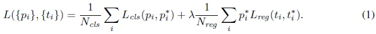
这里，\(i\)是一个mini-batch中anchor的索引，\(p_i\)是anchor \(i\)是目标的预测概率。如果anchor为正，GT标签\(p_i^*\) 就是1，如果anchor为负，\(p_i^*\) 就是0。\(t_i\)是一个向量，表示预测的包围盒的4个参数化坐标，\(t_i^*\) 是与正anchor对应的GT包围盒的坐标向量。分类损失\(L_{cls}\)是两个类别（目标vs.非目标）的对数损失
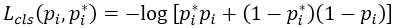
对于回归损失，我们用\( L_{reg}(t_i,t_i^*)=R(t_i - t_i^*) \)来计算，其中R是[5]中定义的鲁棒的损失函数（smooth L1）。
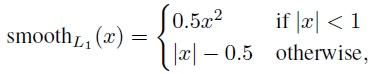
\(p_i^*L_{reg}\)这一项意味着只有正anchor \((p_i^* = 1)\)才有回归损失，其他情况就没有\((p_i^* = 0)\)。cls层和reg层的输出分别由{\(p_i\)}和{\(t_i\)}组成.
这两项分别由\(N_{cls}\)和\(N_{reg}\)以及一个平衡权重\(\lambda\)归一化（早期实现及公开的代码中，λ=10，\(cls\)项的归一化值为mini-batch的大小，即\(N_{cl}\)=256，reg项的归一化值为anchor位置的数量，即\(N_{reg} \sim 2,400\)，这样cls和reg项差不多是等权重的。
对于回归，我们学习[6]采用4个坐标： 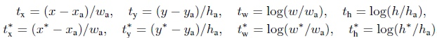
x，y，w，h指的是包围盒中心的（x, y）坐标、宽、高。变量x，xa，x*分别指预测的包围盒、anchor的包围盒、GT的包围盒（对y，w，h也是一样）的x坐标。可以理解为从anchor包围盒到附近的GT包围盒的包围盒回归。
无论如何，我们用了一种与之前的基于特征映射的方法[7, 5]不同的方法实现了包围盒算法。在[7, 5]中，包围盒回归在从任意大小的区域中pooling到的特征上执行，回归权重是所有不同大小的区域共享的。在我们的方法中，用于回归的特征在特征映射中具有相同的空间大小（nxn）。考虑到各种不同的大小，需要学习一系列k个包围盒回归量。每一个回归量对应于一个尺度和长宽比，k个回归量之间不共享权重。因此，即使特征具有固定的尺寸/尺度，预测各种尺寸的包围盒仍然是可能的。
优化
RPN很自然地实现为全卷积网络[14]，通过反向传播和随机梯度下降（SGD）[12]端到端训练。我们遵循[5]中的“image-centric”采样策略训练这个网络。每个mini-batch由包含了许多正负样本的单个图像组成。我们可以优化所有anchor的损失函数，但是这会偏向于负样本，因为它们是主要的。因此，我们随机地在一个图像中采样256个anchor，计算mini-batch的损失函数，其中采样的正负anchor的比例是1:1。如果一个图像中的正样本数小于128，我们就用负样本填补这个mini-batch。
我们通过从零均值标准差为0.01的高斯分布中获取的权重来随机初始化所有新层（最后一个卷积层其后的层），所有其他层（即共享的卷积层）是通过对ImageNet分类[17]预训练的模型来初始化的，这也是标准惯例[6]。我们调整ZF网络的所有层，以及conv3_1，并为VGG网络做准备，以节约内存[5]。我们在PASCAL数据集上对于60k个mini-batch用的学习率为0.001，对于下一20k个mini-batch用的学习率是0.0001。动量是0.9，权重衰减为0.0005[11]。我们的实现使用了Caffe[10]。
区域建议与目标检测共享卷积特征
迄今为止，我们已经描述了如何为生成区域建议训练网络，而没有考虑基于区域的目标检测CNN如何利用这些建议框。对于检测网络，我们采用Fast R-CNN[5]，现在描述一种算法，学习由RPN和Fast R-CNN之间共享的卷积层。
RPN和Fast R-CNN都是独立训练的，要用不同方式修改它们的卷积层。因此我们需要开发一种允许两个网络间共享卷积层的技术，而不是分别学习两个网络。注意到这不是仅仅定义一个包含了RPN和Fast R-CNN的单独网络，然后用反向传播联合优化它那么简单。原因是Fast R-CNN训练依赖于固定的目标建议框，而且并不清楚当同时改变建议机制时，学习Fast R-CNN会不会收敛。虽然这种联合优化在未来工作中是个有意思的问题，我们开发了一种实用的4步训练算法，通过交替优化来学习共享的特征。
第一步，我们依上述训练RPN，该网络用ImageNet预训练的模型初始化，并端到端微调用于区域建议任务。第二步，我们利用第一步的RPN生成的建议框，由Fast R-CNN训练一个单独的检测网络，这个检测网络同样是由ImageNet预训练的模型初始化的，这时候两个网络还没有共享卷积层。第三步，我们用检测网络初始化RPN训练，但我们固定共享的卷积层，并且只微调RPN独有的层，现在两个网络共享卷积层了。第四步，保持共享的卷积层固定，微调Fast R-CNN的fc层。这样，两个网络共享相同的卷积层，构成一个统一的网络。
实现细节
我们训练、测试区域建议和目标检测网络都是在单一尺度的图像上[7, 5]。我们缩放图像，让它们的短边s=600像素[5]。多尺度特征提取可能提高准确率但是不利于速度与准确率之间的权衡[5]。我们也注意到ZF和VGG网络，对缩放后的图像在最后一个卷积层的总步长为16像素，这样相当于一个典型的PASCAL图像（~500x375）上大约10个像素（600/16=375/10）。即使是这样大的步长也取得了好结果，尽管若步长小点准确率可能得到进一步提高。
对于anchor，我们用3个简单的尺度，包围盒面积为128x128，256x256，512x512，和3个简单的长宽比，1:1，1:2，2:1。注意到，在预测大建议框时，我们的算法考虑了使用大于基本感受野的anchor包围盒。这些预测不是不可能——只要看得见目标的中间部分，还是能大致推断出这个目标的范围。通过这个设计，我们的解决方案不需要多尺度特征或者多尺度滑动窗口来预测大的区域，节省了相当多的运行时间。图1（右）显示了我们的算法处理多种尺度和长宽比的能力。下表是用ZF网络对每个anchor学到的平均建议框大小（s=600）。
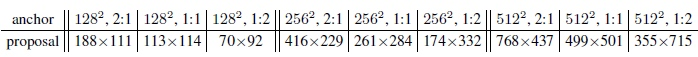
跨越图像边界的anchor包围盒要小心处理。在训练中，我们忽略所有跨越图像边界的anchor，这样它们不会对损失有影响。对于一个典型的1000x600的图像，差不多总共有20k（~60x40x9）anchor。忽略了跨越边界的anchor以后，每个图像只剩下6k个anchor需要训练了。如果跨越边界的异常值在训练时不忽略，就会带来又大又困难的修正误差项，训练也不会收敛。在测试时，我们还是应用全卷积的RPN到整个图像中，这可能生成跨越边界的建议框，我们将其裁剪到图像边缘位置。
有些RPN建议框和其他建议框大量重叠，为了减少冗余，我们基于建议区域的cls得分，对其采用非极大值抑制（non-maximum suppression, NMS）。我们固定对NMS的IoU阈值为0.7，这样每个图像只剩2k个建议区域。正如下面展示的，NMS不会影响最终的检测准确率，但是大幅地减少了建议框的数量。NMS之后，我们用建议区域中的top-N个来检测。在下文中，我们用2k个RPN建议框训练Fast R-CNN，但是在测试时会对不同数量的建议框进行评价。
实验
我们在PASCAL VOC2007检测基准[4]上综合评价我们的方法。此数据集包括20个目标类别，大约5k个trainval图像和5k个test图像。我们还对少数模型提供PASCAL VOC2012基准上的结果。对于ImageNet预训练网络，我们用“fast”版本的ZF网络[23]，有5个卷积层和3个 fc层，公开的VGG-16 模型[19]，有13 个卷积层和3 个fc层。我们主要评估检测的平均精度（mean Average Precision, mAP），因为这是对目标检测的实际度量标准（而不是侧重于目标建议框的代理度量）。
表1（上）显示了使用各种区域建议的方法训练和测试时Fast R-CNN的结果。这些结果使用的是ZF网络。对于选择性搜索（SS）[22]，我们用“fast”模式生成了2k个左右的SS建议框。对于EdgeBoxes（EB）[24]，我们把默认的EB设置调整为0.7IoU生成建议框。SS的mAP 为58.7％，EB的mAP 为58.6％。RPN与Fast R-CNN实现了有竞争力的结果，当使用300个建议框时的mAP就有59.9％（对于RPN，建议框数量，如300，是一个图像产生建议框的最大数量。RPN可能产生更少的建议框，这样建议框的平均数量也更少了）。使用RPN实现了一个比用SS或EB更快的检测系统，因为有共享的卷积计算；建议框较少，也减少了区域方面的fc消耗。接下来，我们考虑RPN的几种消融，然后展示使用非常深的网络时，建议框质量的提高。
表1 PASCAL VOC2007年测试集的检测结果（在VOC2007 trainval训练）。该检测器是Fast R-CNN与ZF，但使用各种建议框方法进行训练和测试。
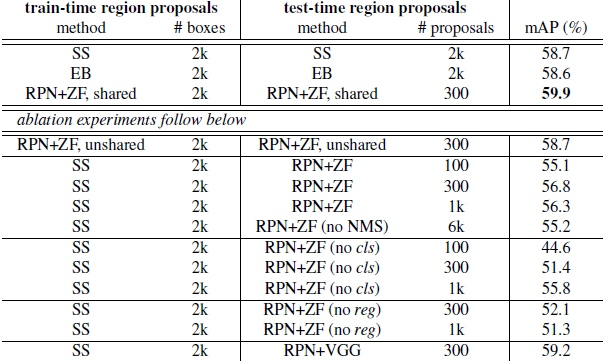
消融试验。为了研究RPN作为建议框方法的表现，我们进行了多次消融研究。首先，我们展示了RPN和Fast R-CNN检测网络之间共享卷积层的影响。要做到这一点，我们在4步训练过程中的第二步后停下来。使用分离的网络时的结果稍微降低为58.7％（RPN+ ZF，非共享，表1）。我们观察到，这是因为在第三步中，当调整过的检测器特征用于微调RPN时，建议框质量得到提高。
接下来，我们理清了RPN在训练Fast R-CNN检测网络上的影响。为此，我们用2k个SS建议框和ZF网络训练了一个Fast R-CNN模型。我们固定这个检测器，通过改变测试时使用的建议区域，评估检测的mAP。在这些消融实验中，RPN不与检测器共享特征。
在测试时用300个RPN建议框替换SS，mAP为56.8％。mAP的损失是训练/测试建议框之间的不一致所致。该结果作为以下比较的基准。
有些奇怪的是，在测试时使用排名最高的100个建议框时，RPN仍然会取得有竞争力的结果（55.1％），表明这种高低排名的RPN建议框是准确的。另一种极端情况，使用排名最高的6k个RPN建议框（没有NMS）取得具有可比性的mAP（55.2％），这表明NMS不会降低检测mAP，反而可以减少误报。
接下来，我们通过在测试时分别移除RPN的cls和reg中的一个，研究它们输出的作用。当在测试时（因此没有用NMS/排名）移除cls层，我们从没有计算得分的区域随机抽取N个建议框。N =1k 时mAP几乎没有变化（55.8％），但当N=100则大大降低为44.6％。这表明，cls得分是排名最高的建议框准确的原因。
另一方面，当在测试时移除reg层（这样的建议框就直接是anchor框了），mAP下降到52.1％。这表明，高品质的建议框主要归功于回归后的位置。单是anchor框不足以精确检测。
我们还评估更强大的网络对RPN的建议框质量的作用。我们使用VGG-16训练RPN，并仍然使用上述SS+ZF检测器。mAP从56.8％（使用RPN+ZF）提高到59.2％（使用RPN+VGG）。这是一个满意的结果，因为它表明，RPN+VGG的建议框质量比RPN+ZF的更好。由于RPN+ZF的建议框是可与SS竞争的（训练和测试一致使用时都是58.7％），我们可以预期RPN+VGG比SS好。下面的实验证明这一假说。
VGG-16的检测准确率与运行时间。表2展示了VGG-16对建议框和检测的结果。使用RPN+VGG，Fast R-CNN对不共享特征的结果是68.5％，比SS基准略高。如上所示，这是因为由RPN+VGG产生的建议框比SS更准确。不像预先定义的SS，RPN是实时训练的，能从更好的网络获益。对特征共享的变型，结果是69.9％——比强大的SS基准更好，建议框几乎无损耗。我们跟随[5]，在PASCAL VOC2007 trainval和2012 trainval的并集上进一步训练RPN，mAP是73.2％。跟[5]一样在VOC 2007 trainval+test和VOC2012 trainval的并集上训练时，我们的方法在PASCAL VOC 2012测试集上（表3）有70.4％的mAP。
表2：在PASCAL VOC 2007测试集上的检测结果，检测器是Fast R-CNN和VGG16。训练数据：“07”：VOC2007 trainval，“07+12”：VOC 2007 trainval和VOC 2012 trainval的并集。对RPN，用于Fast R-CNN训练时的建议框是2k。这在[5]中有报告；利用本文所提供的仓库（repository），这个数字更高（68.0±0.3在6次运行中）。
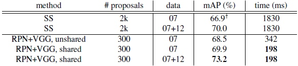
表3：PASCAL VOC 2012测试集检测结果。检测器是Fast R-CNN和VGG16。训练数据：“07”：VOC 2007 trainval，“07++12”： VOC 2007 trainval+test和VOC 2012 trainval的并集。对RPN，用于Fast R-CNN训练时的建议框是2k。
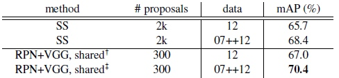
表4中我们总结整个目标检测系统的运行时间。SS需要1~2秒，取决于图像内容（平均1.51s），采用VGG-16的Fast R-CNN在2k个SS建议框上需要320ms（若是用了SVD在fc层的话只用223ms[5]）。我们采用VGG-16的系统生成建议框和检测一共只需要198ms。卷积层共享时，RPN只用10ms来计算附加的几层。由于建议框较少（300），我们的区域计算花费也很低。我们的系统采用ZF网络时的帧率为17fps。
表4： K40 GPU上的用时（ms），除了SS建议框是在CPU中进行评价的。“区域方面”包括NMS，pooling，fc和softmax。请参阅我们发布的代码运行时间的分析。

IoU召回率的分析。接下来，我们计算建议框与GT框在不同的IoU比例时的召回率。值得注意的是，该IoU召回率度量标准与最终的检测准确率只是松散[9, 8, 1]相关的。更适合用这个度量标准来诊断建议框方法，而不是对其进行评估。
在图2中，我们展示使用300，1k，和2k个建议框的结果。我们将SS和EB作比较，并且这N个建议框是基于用这些方法生成的按置信度排名的前N个。该图显示，当建议框数量由2k下降到300时，RPN方法的表现很好。这就解释了使用少到300个建议框时，为什么RPN有良好的最终检测mAP。正如我们前面分析的，这个属性主要是归因于RPN的cls项。当建议框变少时，SS和EB的召回率下降的速度快于RPN。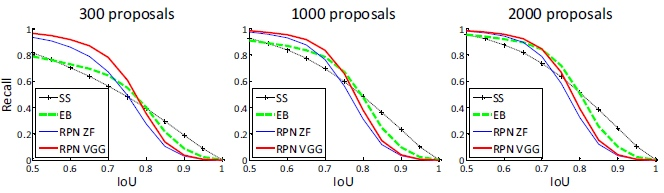
单级的检测vs. 两级的建议框+检测。OverFeat论文[18]提出在卷积特征映射的滑动窗口上使用回归和分类的检测方法。OverFeat是一个单级的，类特定的检测流程，我们的是一个两级的，由类无关的建议框方法和类特定的检测组成的级联方法。在OverFeat中，区域方面的特征来自一个滑动窗口，对应一个尺度金字塔的一个长宽比。这些特征被用于同时确定物体的位置和类别。在RPN中，特征都来自相对于anchor的方形（3*3）滑动窗口和预测建议框，是不同的尺度和长宽比。虽然这两种方法都使用滑动窗口，区域建议任务只是RPN + Fast R-CNN的第一级——检测器致力于改进建议框。在我们级联方法的第二级，区域一级的特征自适应地从建议框进行pooling[7, 5]，更如实地覆盖区域的特征。我们相信这些特征带来更准确的检测。
为了比较单级和两级系统，我们通过单级的Fast R-CNN模拟OverFeat系统（因而也规避实现细节的其他差异）。在这个系统中，“建议框”是稠密滑动的，有3个尺度（128，256，512）和3个长宽比（1：1，1：2，2：1）。Fast R-CNN被训练来从这些滑动窗口预测特定类的得分和回归盒的位置。由于OverFeat系统采用多尺度的特征，我们也用由5个尺度中提取的卷积特征来评价。我们使用[7,5]中一样的5个尺度。
表5比较了两级系统和两个单级系统的变体。使用ZF模型，单级系统具有53.9％的mAP。这比两级系统（58.7％）低4.8％。这个实验证明级联区域建议方法和目标检测的有效性。类似的观察报告在[5,13]中，在两篇论文中用滑动窗口取代SS区域建议都导致了约6％的下降。我们还注意到，单级系统比较慢，因为它有相当多的建议框要处理。
表5：单级检测vs.两级建议+检测。检测结果都是在PASCAL VOC2007测试集使用ZF模型和Fast R-CNN。RPN使用非共享的特征。
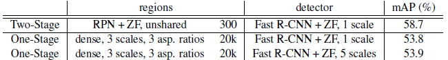
5.总结
我们对高效和准确的区域建议的生成提出了区域建议建议网络（RPN）。通过与其后的检测网络共享卷积特征，区域建议的步骤几乎是无损耗的。我们的方法使一个一致的，基于深度学习的目标检测系统以5-17 fps的速度运行。学到的RPN也改善了区域建议的质量，进而改善整个目标检测的准确性。
表6：Fast R-CNN检测器和VGG16在PASCAL VOC 2007测试集的结果。对于RPN，Fast R-CNN训练时的建议框是2k个。RPN表示非共享特征的版本。

表7：Fast R-CNN检测器和VGG16在PASCAL VOC 2012测试集的结果。对于RPN，Fast R-CNN训练时的建议框是2k个。
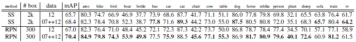
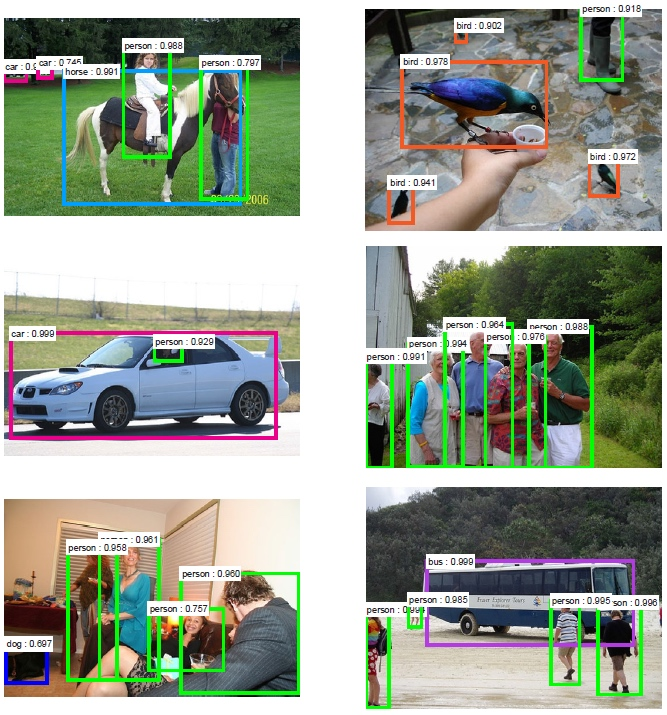
图3：对最终的检测结果使用具有共享特征的RPN + FastR-CNN在PASCAL VOC 2007测试集上的例子。模型是VGG16，训练数据是07 + 12trainval。我们的方法检测的对象具有范围广泛的尺度和长宽比。每个输出框与一个类别标签和一个范围在[0,1]的softmax得分相关联。显示这些图像的得分阈值是0.6。取得这些结果的运行时间是每幅图像198ms，包括所有步骤。
引用
[1] N. Chavali, H. Agrawal, A. Mahendru, and D. Batra. Object-Proposal Evaluation Protocol is ’Gameable’. arXiv: 1505.05836, 2015.
[2] J. Dai, K. He, and J. Sun. Convolutional feature masking for joint object and stuff segmentation. In CVPR, 2015.
[3] D. Erhan, C. Szegedy, A. Toshev, and D. Anguelov. Scalable object detection using deep neural networks. In CVPR, 2014.
[4] M. Everingham, L. Van Gool, C. K. I. Williams, J. Winn, and A. Zisserman. The PASCAL Visual Object Classes Challenge 2007 (VOC2007) Results, 2007.
[5] R. Girshick. Fast R-CNN. arXiv:1504.08083, 2015.
[6] R. Girshick, J. Donahue, T. Darrell, and J. Malik. Rich feature hierarchies for accurate object detection and semantic segmentation. In CVPR, 2014.
[7] K. He, X. Zhang, S. Ren, and J. Sun. Spatial pyramid pooling in deep convolutional networks for visual recognition. In ECCV. 2014.
[8] J. Hosang, R. Benenson, P. Doll´ar, and B. Schiele. What makes for effective detection proposals? arXiv:1502.05082, 2015.
[9] J. Hosang, R. Benenson, and B. Schiele. How good are detection proposals, really? In BMVC, 2014.
[10] Y. Jia, E. Shelhamer, J. Donahue, S. Karayev, J. Long, R. Girshick, S. Guadarrama, and T. Darrell. Caffe: Convolutional architecture for fast feature embedding. arXiv:1408.5093, 2014.
[11] A. Krizhevsky, I. Sutskever, and G. Hinton. Imagenet classification with deep convolutional neural networks. In NIPS, 2012.
[12] Y. LeCun, B. Boser, J. S. Denker, D. Henderson, R. E. Howard,W. Hubbard, and L. D. Jackel. Backpropagation applied to handwritten zip code recognition. Neural computation, 1989.
[13] K. Lenc and A. Vedaldi. R-CNN minus R. arXiv:1506.06981, 2015.
[14] J. Long, E. Shelhamer, and T. Darrell. Fully convolutional networks for semantic segmentation. In CVPR, 2015.
[15] V. Nair and G. E. Hinton. Rectified linear units improve restricted boltzmann machines. In ICML, 2010.
[16] S. Ren, K. He, R. Girshick, X. Zhang, and J. Sun. Object detection networks on convolutional feature maps. arXiv:1504.06066, 2015.
[17] O. Russakovsky, J. Deng, H. Su, J. Krause, S. Satheesh, S. Ma, Z. Huang, A. Karpathy, A. Khosla, M. Bernstein, A. C. Berg, and L. Fei-Fei. ImageNet Large Scale Visual Recognition Challenge. arXiv:1409.0575, 2014.
[18] P. Sermanet, D. Eigen, X. Zhang, M. Mathieu, R. Fergus, and Y. LeCun. Overfeat: Integrated recognition, localization and detection using convolutional networks. In ICLR, 2014.
[19] K. Simonyan and A. Zisserman. Very deep convolutional networks for large-scale image recognition. In ICLR, 2015.
[20] C. Szegedy, S. Reed, D. Erhan, and D. Anguelov. Scalable, high-quality object detection. arXiv:1412.1441v2, 2015.
[21] C. Szegedy, A. Toshev, and D. Erhan. Deep neural networks for object detection. In NIPS, 2013.
[22] J. R. Uijlings, K. E. van de Sande, T. Gevers, and A.W. Smeulders. Selective search for object recognition. IJCV, 2013.
[23] M. D. Zeiler and R. Fergus. Visualizing and understanding convolutional neural networks. In ECCV, 2014.
[24] C. L. Zitnick and P. Doll´ar. Edge boxes: Locating object proposals from edges. In ECCV, 2014.